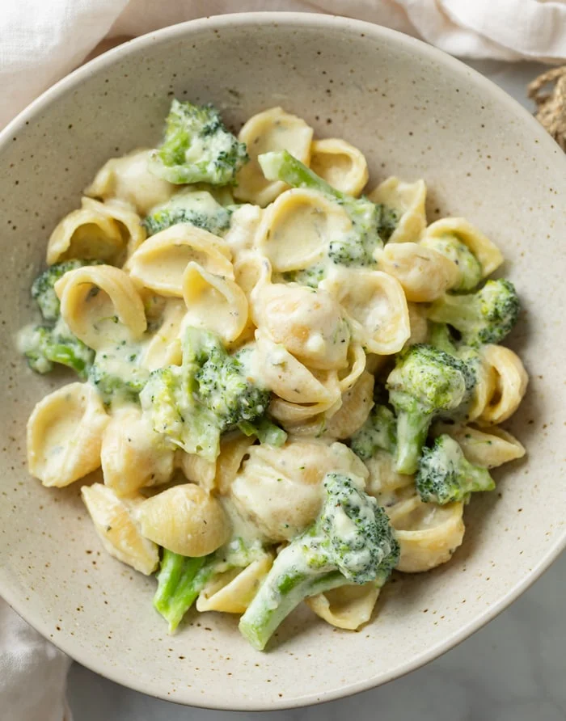

Back to the Homepage.
Pasta Broccoli

Description
This Creamy Broccoli Pasta has pasta shells smothered in a buttery Garlic Parmesan Sauce with herbs and lots of broccoli! Add a hint of lemon juice at the end for the ultimate flavor that your family will love.
This is one pot meal that you can make in 30 minutes or less!
Ingredients
- 4 Tablespoons butter
- 4 cloves garlic, minced
- 2 cups chicken broth
- 1 1/4 cups half and half
- 1/2 lb. medium pasta shells
- 1/4 teaspoon EACH: onion powder, dried thyme, salt
- 1/2 teaspoon EACH: drieg oregano, dried parsley
- 3 1/2 cups broccoli florets, uncooked
- 2 teaspoons lemon juice
- 3/4 cup Parmesan Cheese, finely grated into a powder
Instructions
- Measure out all ingredients prior to beginning. (This is called “mise en place” and is a good idea for quick recipes.) Pro Tip: Cut the broccoli into smaller pieces so that they cook more quickly.
- Melt butter over medium heat in a large skillet. Add the garlic and cook for 1 minute.
- Add the chicken broth, half and half, and seasonings.
- Bring to a boil and add the pasta. Submerge the pasta into the liquid and let it return to a boil. Cook partially covered according to package instructions. Add the broccoli during the last 6 minutes. Run a silicone spatula along the bottom of the pan occasionally to prevent the pasta from sticking to it.
- Remove cover taste-test a pasta noodle for doneness before proceeding. If needed, cover and cook longer, until your desired doneness is obtained.
- Remove from heat. Add the lemon juice and use a silicone spatula to gently mix in the Parmesan cheese.
- Sauce will continue to thicken upon standing. Garnish with parsley and serve with garlic bread with cheese.
Original Recipe from: The Cozy Cook